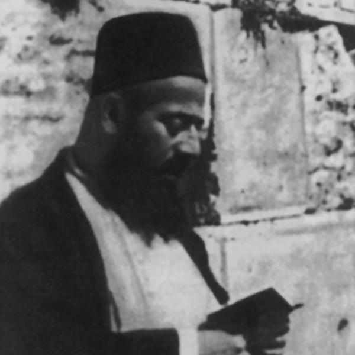

Home / Anecdotes & Teachings
Anecdotes & Teachings
Across four centuries, certain stories about the Laniado family were retold often enough to survive in writing — in sefarim, in eulogies, in family memory. They are gathered here as standalone vignettes. Each links back to the fuller biography where one exists.
A barrel of diamonds
Family tradition holds that Rabbi Shmuel Laniado "Ba'al HaKelim" was once traveling by ship — possibly from Tzfat to Aleppo — when a fellow passenger died during the voyage. The dead man's belongings, including several barrels, were sold off to the other passengers. Rabbi Shmuel bought a barrel supposedly containing fish; when he opened it, he found it full of diamonds and other precious stones, and became a wealthy man. Family members say this is why nearly every book he later wrote carries the word כלי (kli, "vessel") in its title — in gratitude to God for the miracle.
"A man who is like me"
When the community of Aleppo asked Rabbi Yosef Karo — the Beit Yosef, author of the שולחן ערוך — to become their Chief Rabbi, he was too occupied to go himself. He sent word instead: "ish asher kamoni" — איש אשר כמוני, "a man who is like me" — and dispatched Rabbi Shmuel Laniado in his place. Aleppo's native families had a tradition of drawing their Chief Rabbi only from בית דוד (the House of David); the Beit Yosef's recommendation alone was enough to override it, and Rabbi Shmuel was accepted as Chief Rabbi for the next 40 years. Read the fuller story on his profile page.
Renouncing Shabbtai Tzvi
When the false messiah Shabbtai Tzvi passed through Syria, Rabbi Shlomo Laniado "HaZaken" met with him and, like many great rabbis of the era, initially believed he might be genuine. For reasons the sources never explain, Rabbi Shlomo withdrew his support and told the community to stop following him — before the wider Jewish world recognized the movement as false, sparing Aleppo some of the disillusionment that followed elsewhere.
The Shelah HaKadosh's visit
Traveling from Poland toward the Land of Israel, the Shelah HaKadosh stopped in Syria for roughly three weeks, through the Yamim Nora'im. He wrote afterward that the community was "learning all day and sleeping very little at night," and praised Rabbi Shmuel Laniado "HaMufla" as a scholar who "didn't know — there wasn't a single teaching or allusion he didn't know," fluent in both the revealed and hidden Torah.
The funeral of a simple man
When an ordinary member of the Aleppo community passed away, custom held that the rabbi would walk a few feet with the body and then leave. Rabbi Refael Shlomo "MaHaRaShal" walked the entire way — because, he told his son afterward, he had seen angels accompanying the deceased, singing Tehillim, led by a radiant figure resembling King David. A dream later revealed why: the man had known only the first book of Tehillim, and recited it faithfully in the synagogue every day after work.
The plague parchment
During a severe plague in Aleppo, Rabbi Refael Shlomo wrote Divine Names on parchment and had the synagogue's shamash hold them up at night when he heard the approaching spirits. Frightened at first, the shamash did as instructed — and heard the spirits declare themselves "out of a job." The plague stopped, and those already sick recovered when shown the same parchment.
"Of course they came"
Too weak to serve as chazzan near the end of his life, Rabbi Refael Shlomo appointed his son Rabbi Efraim to blow the shofar in his place. Congregants said the prayers went well but the start of the shofar-blowing felt weak. Efraim explained: reciting the prayer asking for an angel to be appointed over the shofar, he saw the synagogue fill with angels and grew frightened. His father's reply has become a small family teaching in itself: "You invited the angels to come, and you didn't expect them to? Of course they came — what's the surprise?"
A prayer answered with a homeland
Rabbi Avraham Laniado "HaRav HaMechaven" was present at the passing of Rabbi Mordechai Labaton, and in that moment prayed that he himself would merit reaching the Land of Israel. The family account credits that prayer directly: he made it to Eretz Yisrael, and the line that followed him — through Rabbi Meir "HaSofer," Rabbi Refael Shlomo of Porat Yosef, and eventually Chacham David Ben Tzion Laniado — never left.
A dream of the Ben Ish Chai's funeral
The Kabbalist Rabbi Avraham Adess once dreamed he saw Rabbi Avraham Laniado "HaRav HaMechaven" walking toward Jerusalem, and asked him why. Rabbi Avraham answered that Rabbi Yosef Chaim — the Ben Ish Chai — had passed away, and he was walking the body from Baghdad to Jerusalem. R' Adess woke, startled; falling back asleep, he dreamed the funeral itself, in full. The next day, inquiries to Baghdad confirmed the Ben Ish Chai had indeed died — on the very day of the dream — and that the funeral had unfolded exactly as R' Adess had seen it, down to the order of the eulogies.
Founding Porat Yosef
Rabbi Refael Shlomo Laniado co-founded Yeshivat אהל מועד with Rabbi Eliyahu Bachor Chazan (Av Beit Din of Alexandria) and Rabbi Ezra Harari-Raful. When the Ottoman government imposed a military draft that threatened to empty the yeshiva of its students, the Rishon LeTzion negotiated a deal: the property would be sold to cancel the draft. Many students fled to Egypt or Bukhara in the meantime. In 1922, the yeshiva was reborn as פורת יוסף (Porat Yosef), with Rabbi Refael Shlomo Laniado as its first Rosh Yeshiva and Rabbi Ezra Attia as Mashgiach — a school that would go on to shape a generation of Sephardic Torah leadership.
Surviving the Hebron riots

Chacham David Ben Tzion Laniado lived in Hebron with his young family when the 1929 riots broke out. On his way to Ma'arat HaMachpela, a group of Arabs surrounded him intending to kill him — until the local sheikh passed by and identified him: "he's the sage of the Jews." He gathered his wife and children and fled the city; on the road to Jerusalem, the family sheltered in a cave where another armed group surrounded the entrance. At that moment, British police happened to pass and escorted the family to safety. Chacham David later devoted years to traveling back to Aleppo to copy the gravestones of its sages and interview its elders, so that the community's history would not be lost — the record that became לקדושים אשר בארץ ("Aleppo, City of Scholars").